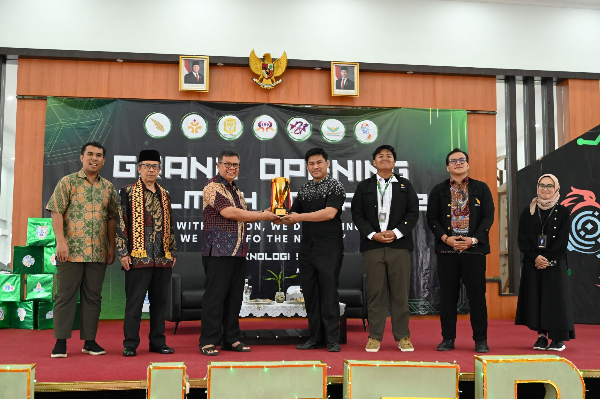

BERITA TERBARU

Pembukaan LITERA 2025 Ajak Mahasiswa Peduli dengan Pembangunan Berkelanjutan
ITERA-NEWS. LITERA (Liga Ilmiah Itera) adalah ajang kompetisi ilmiah antar program studi dan seminar yang digelar sebagai wadah bagi mahasiswa Itera untuk mengembangkan inovasi, kreativitas, dan capaian prestasi. Pada tahun 2025, LITERA resmi kembali diselenggarakan dan resmi dibuka pada tanggal 11 September 2025.
Pada tahun ini, LITERA mengangkat tema “Green Future Starts Here: Inovasi Mahasiswa untuk Energi Berkelanjutan Menuju Indonesia Emas 2025”. Melalui tema tersebut, LITERA berupaya menumbuhkan kepedulian mahasiswa/i Itera terhadap perkembangan sains dan teknologi, mengasah daya pikir kritis, kreatif, dan inovatif.
Pembukaan LITERA 2025 tahun ini dihadiri oleh Direktur Pendidikan Tinggi IPTEK dan Kebudayaan, Drs. Amich Alhumami, MA, M.Ed, PhD., Wakil Rektor Bidang Akademik dan Kemahasiswaan Itera, Prof. Dr. Eng. Khairurrijal, M.Si., Wakil Rektor Bidang Keuangan dan Umum Ir. Arif Rohman, S.T., M.T., Presiden Mahasiswa KM Itera, Muhammad Rizky Saputra, Perwakilan Kemahasiswaan Itera dan peserta LITERA 2025.
Wakil Rektor Bidang Akademik dan Kemahasiswaan Itera, Prof. Dr. Eng. Khairurrijal, M.Si., menyampaikan bahwa melalui kegiatan LITERA, mahasiswa dipersiapkan untuk memiliki kemampuan bersaing secara sehat di ranah akademik maupun non-akademik. Selain itu, mahasiswa juga diharapkan mampu menjaga kelestarian lingkungan serta berperan aktif dalam mendukung terwujudnya program Indonesia Emas.
Melalui kegiatan LITERA ini dapat tercipta dampak positif bagi seluruh sivitas akademika Itera serta lingkungan sekitar, sesuai dengan tema pada tahun ini. Diharapkan bisa menjadi langkah nyata untuk mendorong inovasi dan kreativitas mahasiswa.
Drs. Amich dalam seminar menyampaikan peran penting mahasiswa untuk menjadi agen perubahan dalam mewujudkan SDGs yang telah disepakati oleh dunia. “Sebagai bagian dari dunia akademik, perguruan tinggi memiliki tiga peran sentral, yaitu knowledge production, centric development, dan centric resource. Dari peran tersebut, perguruan tinggi diharapkan mampu melahirkan inovasi dan memberikan dampak nyata bagi masyarakat serta penguatan budaya ilmiah dan semangat berinovasi.” ujar Drs. Amich.